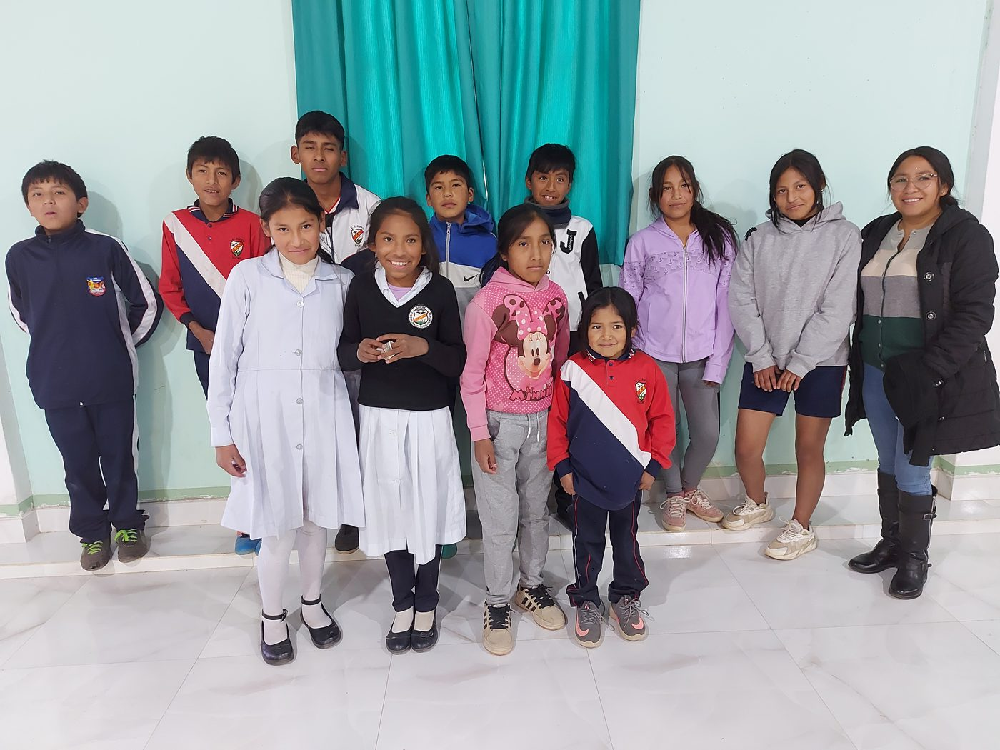

Somos una fundación cristiana sin fines de lucro que trabaja por el bienestar de niños, adolescentes, jóvenes, mujeres gestantes y familias en situación de vulnerabilidad.

La Fundación Vida Saludable "VISA" es una organización sin fines de lucro, fundada por un grupo de personas que profesan la fe en Cristo, unidas por el amor a los niños, preadolescentes, adolescentes, jóvenes, mujeres en estado de gestación y comunidades más vulnerables.
Los asistimos mediante convenios de cooperación con entidades públicas y privadas, creando centros de desarrollo integral y apoyo escolar: alternativas alimentarias, acompañamiento socioeducativo y acceso a servicios médicos básicos, todo basado en principios cristianos.
Conoce a nuestro equipoSer una institución comprometida con programas que promuevan oportunidades de crecimiento integral en educación, salud y protección, basados en principios y valores.
Somos sembradores que promovemos oportunidades para potenciar el bienestar de los niños, jóvenes y sus familias, con programas integrales que fortalecen la unidad familiar.
Nuestros fundamentos están en valores sólidos que orientan cada una de nuestras acciones y decisiones, reflejando nuestro compromiso con niños, adolescentes, jóvenes y familias en vulnerabilidad.
Creemos que si amamos a Dios, demostraremos amor a nuestro prójimo.
Velamos por la integridad de cada niño y niña que forma parte de nuestros programas.
Realizamos nuestro trabajo con excelencia, para glorificar a Dios en cada acción.
Actuamos de manera íntegra y transparente en cada gestión de la fundación.
Reconocemos a Dios como la primera autoridad, sostén de toda autoridad humana.
Nos preparamos con anticipación para responder a los desafíos del futuro.
Servimos primero a Dios y, a través de Él, a cada persona que lo necesita.
Con la ayuda de Dios todo es posible. Tu apoyo transforma la vida de niños, adolescentes y familias en Sucre.
Quiero apoyar